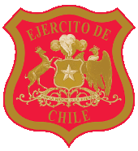

Estudios Realizados
- Escolar SS.CC
-
Escuela militar
Escuela Militar

- Ejército Ejército 
A la edad de los 18 años cuando cursaba 4to. Medio en el colegio de los sagrados corazones en viña del mar, decidí entrar al Ejército, por lo que me fui el 2006 a la escuela militar en Santiago, dejando de lado a mis padres y amigos. El año 2008 cuando me encontraba en 3er. Año de escuela, realice el curso de paracaidismo básico militar, curso muy exigente que duro 5 semanas. Después de cuatro años egrese de la escuela militar como Alférez de Ejército donde fui trasladado a la ciudad de linares, para continuar mis estudios como oficial de Artillería, posterior a eso me traslade a la ciudad de putre. Realice el curso de guerra especial mención liderazgo el año 2014. Actual mente me encuentro estudiando algo que desde siempre me gusto, pero lo deje de lado para realizar otro de mis sueños. Y ahora que esta la modalidad online no voy a perder tiempo y comenzare otro de mis sueños el cual es ser un gran programador.